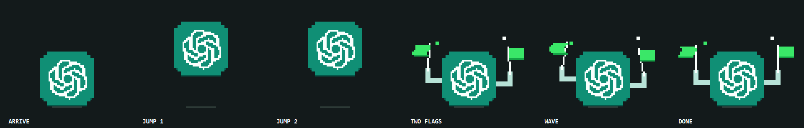

Verdiğim karar
Bildirim için sohbet metnini kaydetmeye veya ağ isteği göndermeye gerek yok. Proje, tamamlanma olayına odaklanır.
PROJE · PIKSEL BILDIRIM
AI aracıCodex
Aynı fikir Codex için: iş bitince piksel logo saatin üstünde iki kez zıplar, iki yeşil bayrak sallar.
Codex bir turu tamamladığında, Windows masaüstünde saatin üzerinde kısa bir piksel animasyonuyla haber vermek. Proje Windows ve WSL kullanımını destekler.
Gerçek proje görselindeki altı kare: geliş, iki zıplama, iki bayrak, kutlama.

Bildirim için sohbet metnini kaydetmeye veya ağ isteği göndermeye gerek yok. Proje, tamamlanma olayına odaklanır.
Bu sayfada doğrulanmamış bir hata hikâyesi üretmiyorum. Windows ve WSL arasındaki tetikleme yolu ile art arda tamamlanan görevlerin davranışı, proje incelenirken özellikle bakılabilecek noktalar.
Claude sürümündeki temel fikir burada farklı bir tamamlanma olayına bağlanıyor. İki projeyi karşılaştırınca aynı arayüz fikrinin farklı ajanlarla nasıl çalıştırılabildiği görülebilir.
Olay alma ve animasyon katmanlarını ayrı doğrulamak; farklı ortamları aynı küçük bildirim sözleşmesiyle birleştirmek değerlendirilebilir.
Projenin güncel kurulum adımları, sürümleri ve değişiklikleri GitHub'da.